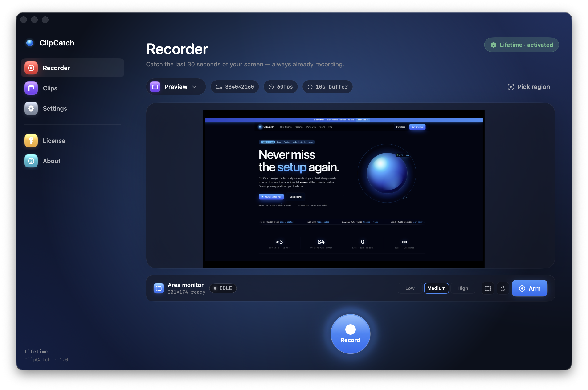

ClipCatch keeps the last sixty seconds of your chart always ready to save. You saw the tape rip — hit save and the move is on disk. One app, every platform you trade on.
Recorder, Clips, Settings. No menus to dig through, no project files, no exports. Hit the hotkey, the clip is on disk.

No tutorial. No onboarding. Open it, pick what to record, trade.
The last 60 seconds (or 3 min) live in RAM. Nothing on disk. Under 3% CPU on Apple Silicon. You forget it's there.
Hit Save 60s — or let the Area Monitor auto-save when the newest candle moves hard. The clip is already rendered.
MP4, H.264, named with the ticker and time. Open with anything. Drop in Notion, Discord, Journalytix — wherever your journal lives.
ClipCatch keeps the last 60 seconds of your screen in memory — not files. Storage stays clean. CPU stays cool. And "wait, did anyone get that?" becomes: you did.
Drag a rectangle over your P&L tile, your boss bar, your fill notification. ClipCatch watches the pixels. The instant they change, it's recording — no key, no click, no missed move.
Pick any rectangle on screen with the picker, the way you'd take a screenshot. ClipCatch captures only that. Sharper output, smaller files, no UI chrome — just the pixels you actually want to keep.
A 45-second clip of the actual bar-by-bar print is worth ten paragraphs in your trade journal. Drop it in Notion or Edgewonk and move on.
Trade review over Discord or Zoom. Paste a clip, get notes back. Better than chart screenshots — they can see the build-up.
When your DOM shows one thing and your broker says another, a clip of the ladder at the exact millisecond is not a debate.
ClipCatch records what's on screen — so it works with every trading platform, period. Here are the ones our beta testers use most.
"I've screenshotted ten thousand charts. Every single one was the wrong moment. This is the first tool that catches the actual print."
"Set the area over my P&L, let it auto-record. I have a library of every stop-out I ever took. Ugly, but it made me a better trader."
"Replaced OBS, Loom, and QuickTime on my rig. Laptop fan finally shuts up."
"My journal used to be screenshots and bad memory. Now it's actual replays of the entry. Game changer for review."
"Bound the save key to my MX side button. Three weeks in, I've never missed a fill again. Worth ten times the price."
"I run two charts and a DOM. ClipCatch's footprint is genuinely invisible — couldn't say that about Loom."
Every plan starts with 3 days free — no credit card, no account, every feature unlocked. Pay when you've decided it's worth keeping.
Both plans · 2 Macs per licence · Secure checkout via Polar
Download, install, record. No card, no account, no friction. After 3 days the app asks for a licence key before it'll record again. Saved clips stay in your Movies folder regardless — they're just MP4s, they never needed the app.
Yes. Every licence covers 2 Macs — work desk + home setup is the typical split. You can free up a slot from Settings → License if you sell or replace a machine.
Lifetime pays itself back in 10 months and never renews. Pick Monthly if you want to feel it out, Lifetime if you already know you're keeping it. You can upgrade from Monthly to Lifetime anytime and we'll credit you what you already paid.
No telemetry. No analytics. No crash reporting. Licence checks go to Polar.sh once a day, that's it. Your recordings never leave your machine unless you share them yourself.
If the platform renders on your screen, ClipCatch records it. Every firm-specific build of NinjaTrader, Tradovate, Rithmic, ProjectX, TradingView, TWS — they all just render pixels, ClipCatch catches them.
That's exactly why we offer a 3-day free trial — every feature unlocked, no card required. Try it on your own setup before you pay. We don't process refunds after purchase, so please use the trial first.
Open the email Polar sent you at checkout — there's a "Manage subscription" link that takes you straight to your customer portal. From there, hit Cancel subscription and you're done. Cancellation stops future renewals immediately; you keep access until the end of the period you've already paid for. Lost the email? Email support@clipcatch.app with the address you used at checkout and we'll send the link.
System audio + mic capture are both supported with built-in AGC. You decide per-recording whether to include them in Settings → Camera & Mic.
Not yet. We prototyped one but the platform's capture APIs are messier than macOS — rather than ship something half-baked we're focusing Mac-only until the Mac build is exactly where we want it.